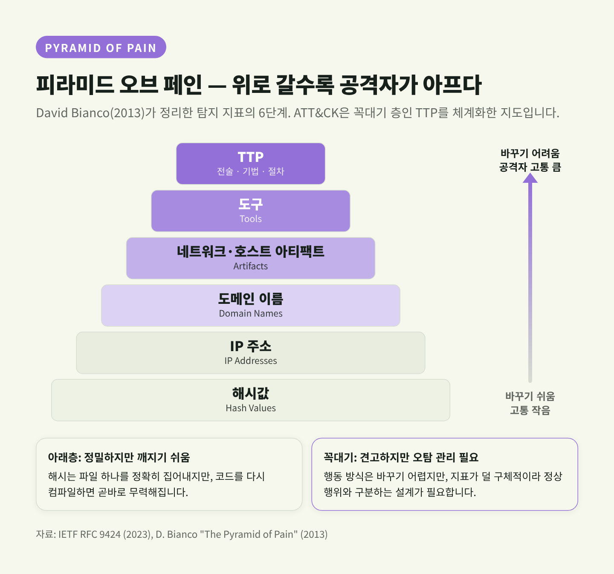
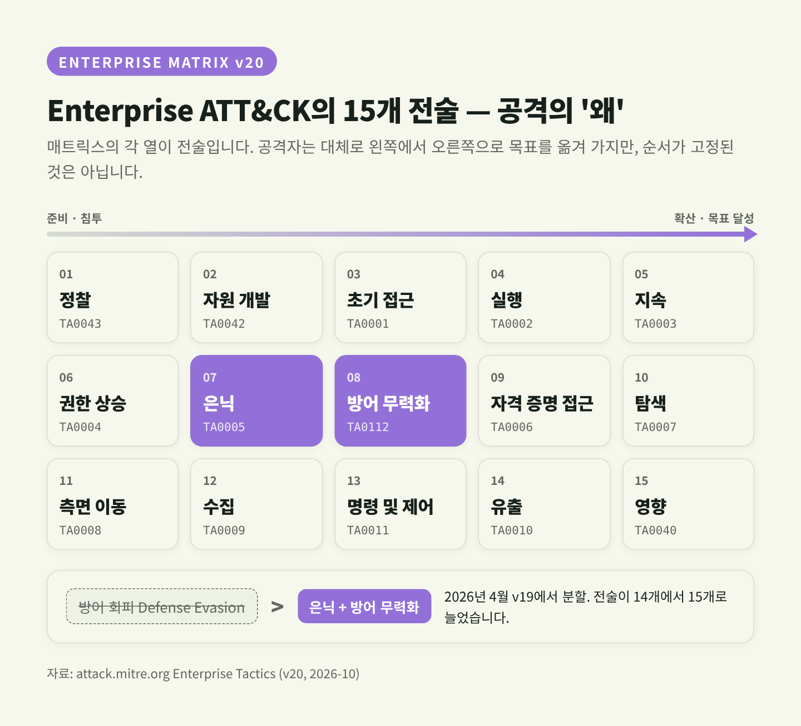
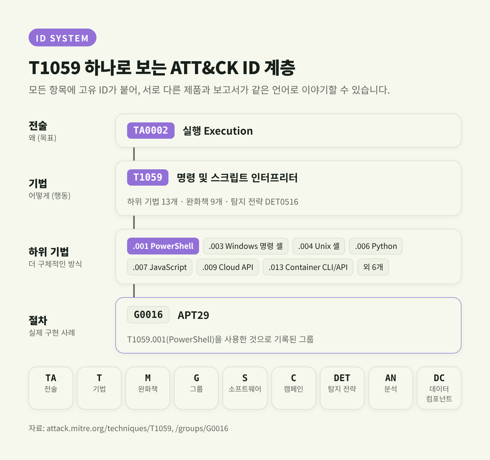
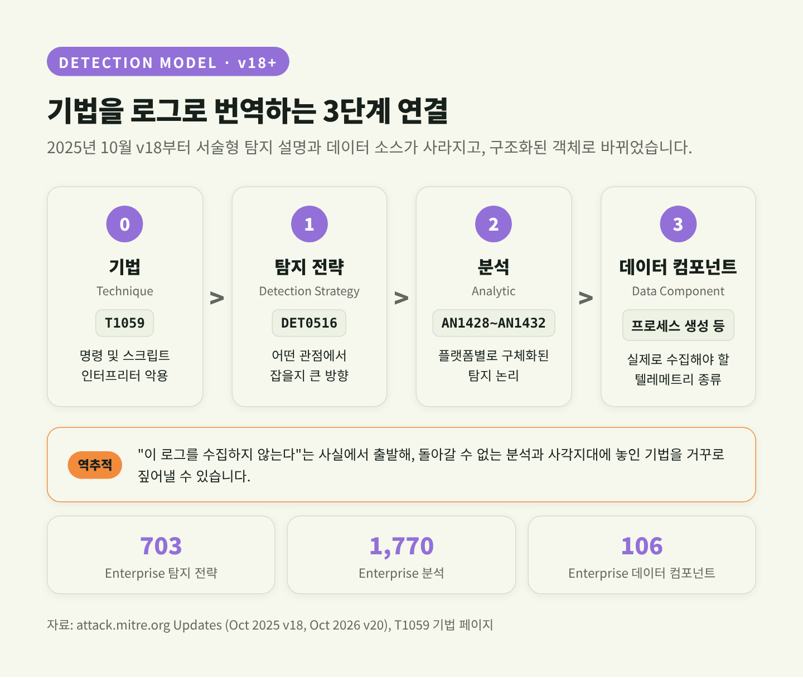
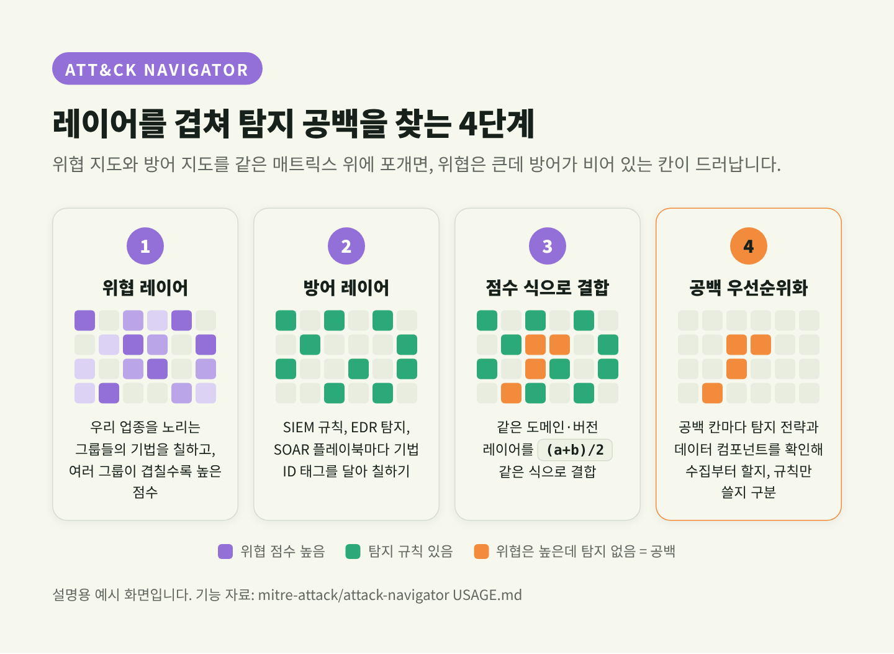
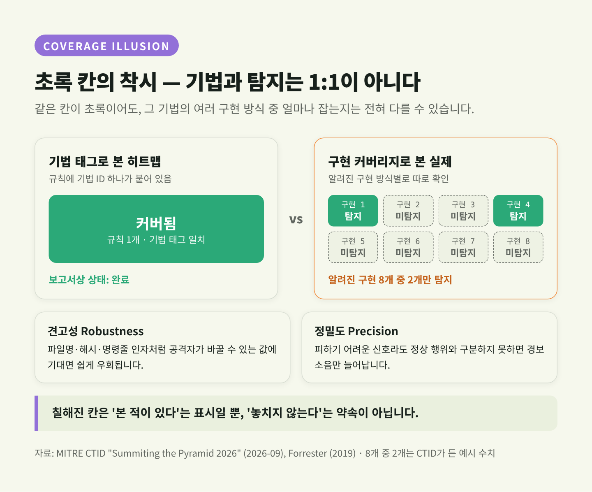

MITRE ATT&CK 원리 — 전술·기법 지도로 탐지 공백을 찾는 법

이번 글에서는 보안 업계의 공용어가 된 MITRE ATT&CK(마이터 어택) 프레임워크의 원리를 정리해 보겠습니다. 핵심은 간단합니다. 공격자의 도구나 흔적이 아니라 행동을 목록으로 만들어 지도처럼 펼쳐 두면, 우리 조직이 무엇을 보고 있고 무엇을 놓치는지 드러난다는 것입니다. 탄생 배경부터 매트릭스 구조, 실무 활용, 그리고 자주 빠지는 함정까지 차례로 살펴보겠습니다.
3줄 요약
- ATT&CK은 실제 침해 사고에서 관찰된 공격자 행동을 '전술(왜)–기법(어떻게)–절차(실제 구현)'로 정리한 공개 지식 베이스입니다.
- 2026년 10월 공개된 현행 v20 기준 Enterprise 매트릭스는 전술 15개, 기법 227개, 하위 기법 479개로 이뤄져 있습니다.
- 위협 그룹이 쓰는 기법과 내 탐지 규칙을 같은 지도 위에 겹치면 공백이 보이지만, 칸이 칠해졌다고 탐지가 완성된 것은 아닙니다.
■ 포트 미드의 실험실에서 시작된 목록
ATT&CK의 출발점은 거창한 표준화 작업이 아니었습니다. 미국의 비영리 연구기관 MITRE는 2010년 FMX(Fort Meade Experiment)라는 연구 환경을 꾸렸습니다. 연구진은 이곳에서 실제 공격자처럼 움직이는 에뮬레이션을 하고, 그 흔적을 방어 쪽에서 얼마나 잡아내는지 시험했습니다.
전제는 하나였습니다. "침해는 이미 일어났다(assume breach)." 담장을 높이는 일보다, 이미 들어온 공격자를 엔드포인트 기록과 행위 분석으로 얼마나 빨리 찾아내느냐에 집중한 것입니다. 그러려면 공격자가 침투 뒤에 하는 일을 체계적으로 적어 둔 목록이 필요했습니다.
그렇게 2013년 9월 첫 ATT&CK 모델이 만들어졌습니다. MITRE는 이를 2015년 5월 외부에 공개했는데, 당시 규모는 전술 9개, 기법 96개였습니다. 이름 자체가 성격을 말해 줍니다. Adversarial Tactics, Techniques, and Common Knowledge — 공격자의 전술과 기법에 관한 공통 지식이라는 뜻입니다.
연구진이 스스로 세운 성공 지표도 인상적입니다. "문서화된 공격자 행동을 우리는 얼마나 잘 탐지하고 있는가?" 이 질문이 지금까지 ATT&CK 활용의 뼈대로 남아 있습니다.
■ 왜 IP와 해시가 아니라 '행동'인가
ATT&CK이 행동에 집착하는 이유는 피라미드 하나로 설명됩니다. 보안 연구자 데이비드 비앙코(David Bianco)가 2013년 3월 제시한 '피라미드 오브 페인(Pyramid of Pain)'입니다.

피라미드 맨 아래에는 악성 파일의 해시값이 있습니다. 그 위로 IP 주소, 도메인 이름, 네트워크·호스트 아티팩트, 도구가 쌓이고, 꼭대기에 TTP(전술·기법·절차)가 놓입니다. 위로 올라갈수록 방어자가 그 지표를 막았을 때 공격자가 겪는 고통이 커집니다.
해시는 코드를 다시 컴파일하기만 해도 바뀝니다. IP나 도메인도 돈을 조금 들이면 새로 구할 수 있습니다. 반면 "PowerShell로 원격 스크립트를 내려받아 실행한 뒤 레지스트리에 자리를 잡는다" 같은 행동 방식은 쉽게 바꾸지 못합니다. 바꾸려면 공격 전략을 새로 짜야 하기 때문입니다.
IETF가 2023년 펴낸 RFC 9424는 이 구조를 정밀도와 취약성의 맞교환으로 정리합니다. 아래쪽 지표는 정확하지만 깨지기 쉽고, 위쪽으로 갈수록 견고하지만 오탐이 늘어나는 경향이 있다는 것입니다. ATT&CK은 바로 이 꼭대기 층, 공격자가 가장 바꾸기 싫어하는 층을 체계적으로 기록한 지도라고 보시면 됩니다.
■ 매트릭스 읽는 법 — 열은 '왜', 칸은 '어떻게'
ATT&CK 매트릭스를 처음 열면 표 하나가 화면을 가득 채웁니다. 읽는 규칙은 두 가지입니다.
- 열(전술, Tactic): 공격자가 그 행동으로 이루려는 목표, 즉 "왜"입니다.
- 칸(기법, Technique): 그 목표를 달성하는 구체적 행동, 즉 "어떻게"입니다.
여기에 두 층이 더 있습니다. 하위 기법(Sub-technique)은 기법을 더 잘게 나눈 설명이고, 절차(Procedure)는 특정 공격 그룹이 그 기법을 실제로 구현한 방식입니다. 흔히 말하는 TTP가 바로 이 세 층을 합친 말입니다.

현행 v20 기준 Enterprise 매트릭스의 전술은 15개입니다. 정찰, 자원 개발, 초기 접근, 실행, 지속, 권한 상승, 은닉, 방어 무력화, 자격 증명 접근, 탐색, 측면 이동, 수집, 명령 및 제어, 유출, 영향 순입니다.
예전 해설서를 보신 분이라면 14개로 기억하실 수 있습니다. 2026년 4월 v19에서 오랫동안 한 열을 차지하던 '방어 회피(Defense Evasion)'가 둘로 나뉘었기 때문입니다. 보안 도구는 정상적으로 돌아가는데 그 눈을 피해 숨는 행동은 '은닉(Stealth)'으로, 보안 도구를 끄거나 로그를 지우는 행동은 '방어 무력화(Defense Impairment)'로 갈라졌습니다.
예전엔 숨는 것과 부수는 것이 한 열에 섞여 있었습니다. 지금은 둘이 따로 있어, 방어자가 어느 쪽을 먼저 메워야 할지 판단하기 쉬워졌습니다. 다만 그만큼 Defense Evasion을 기준으로 작성된 탐지 규칙과 보고서는 다시 매핑해야 하는 숙제가 생겼습니다. MITRE는 전환 가이드와 JSON·CSV 대응표를 함께 내놓았습니다.
v20 공식 집계로 Enterprise에는 기법 227개, 하위 기법 479개, 위협 그룹 178개, 소프트웨어 842개가 등록돼 있습니다. 모바일과 산업제어시스템(ICS) 매트릭스는 각각 전술 12개를 따로 둡니다. 갱신은 대체로 매년 4월과 10월, 두 차례 이뤄집니다. v20에는 프롬프트 인젝션처럼 AI를 겨냥하거나 AI를 활용하는 기법도 새로 들어왔습니다.
■ T1059 하나로 보는 ID 체계
ATT&CK의 진짜 힘은 모든 항목에 고유 ID가 붙어 있다는 데 있습니다. 가장 자주 인용되는 기법 하나를 따라가 보겠습니다.

T1059 '명령 및 스크립트 인터프리터(Command and Scripting Interpreter)'는 실행(TA0002) 전술에 속합니다. 그 아래 하위 기법이 13개 있습니다. T1059.001 PowerShell, .003 Windows 명령 셸, .004 유닉스 셸, .006 파이썬, .009 클라우드 API, .013 컨테이너 CLI/API 같은 식입니다. 점 뒤의 세 자리 숫자가 하위 기법을 뜻합니다.
ID 접두어도 규칙이 있습니다. TA는 전술, T는 기법, M은 완화책, G는 그룹, S는 소프트웨어, C는 캠페인입니다. v18부터는 DET(탐지 전략), AN(분석), DC(데이터 컴포넌트)도 같은 방식으로 번호가 매겨집니다.
이 ID 덕분에 서로 다른 회사, 서로 다른 제품이 같은 언어로 이야기할 수 있습니다. 위협 인텔리전스 보고서에 "T1059.001 사용"이라고 적히면, 그 행동이 무엇이고 어떤 완화책과 탐지 전략이 연결돼 있는지 누구나 같은 페이지에서 확인할 수 있습니다. T1059 페이지에는 완화책 9개와 탐지 전략 DET0516, 그에 딸린 분석 5개가 연결돼 있습니다.
■ 그룹과 소프트웨어 — 기법에 '누가'를 붙이다
기법 목록만으로는 우선순위를 정하기 어렵습니다. 200개가 넘는 기법을 한꺼번에 막을 수는 없기 때문입니다. 그래서 ATT&CK은 공개된 위협 인텔리전스와 사고 보고서를 근거로, 실제 공격 그룹이 어떤 기법을 썼는지를 함께 기록합니다.
예를 들어 APT29(G0016)는 러시아 해외정보국(SVR) 소행으로 지목된 그룹입니다. Cozy Bear, NOBELIUM, Midnight Blizzard 같은 별칭으로도 알려져 있고, 최소 2008년부터 활동했으며 SolarWinds 침해와도 연결돼 있습니다. ATT&CK 페이지에는 이 그룹이 공개 애플리케이션 취약점 악용(T1190), 스피어피싱 첨부(T1566.001), PowerShell(T1059.001), HTML 스머글링(T1027.006) 같은 기법을 썼다는 기록과 근거 보고서가 정리돼 있습니다. SUNBURST, TEARDROP 같은 악성코드와 Mimikatz, Cobalt Strike 같은 도구도 소프트웨어 항목으로 이어집니다.
여기서 실무적인 질문이 하나 생깁니다. "우리 업종을 노리는 그룹들은 주로 어떤 기법을 쓰는가?" 이 질문에 답할 수 있게 되면, 수백 개 기법이 수십 개의 우선 과제로 줄어듭니다.
■ 탐지 전략과 데이터 컴포넌트 — 칸을 로그로 번역하기
기법을 알았다면 다음은 "무엇을 봐야 잡히는가"입니다. ATT&CK은 2025년 10월 v18에서 이 부분을 크게 바꿨습니다. 기법 페이지에 서술형으로 적혀 있던 탐지 설명과 데이터 소스(Data Sources)를 걷어내고, 구조화된 세 단계로 다시 짰습니다.

첫째, 기법마다 하나 이상의 탐지 전략(Detection Strategy) 이 붙습니다. 그 기법을 어떤 관점에서 잡을지에 대한 큰 방향입니다. 둘째, 전략 아래에 분석(Analytic) 이 달립니다. 윈도우, 리눅스처럼 플랫폼별로 구체화된 탐지 논리입니다. 셋째, 분석은 자신이 필요로 하는 데이터 컴포넌트(Data Component) 를 가리킵니다. 프로세스 생성, 레지스트리 키 접근처럼 실제로 수집해야 하는 텔레메트리의 종류입니다.
v20 기준 Enterprise에는 탐지 전략 703개, 분석 1,770개, 데이터 컴포넌트 106개가 정리돼 있습니다. 이 구조가 실무에서 반가운 이유는 역방향 추적이 가능해서입니다. "우리는 프로세스 생성 로그를 수집하지 않는다"는 사실 하나로, 어떤 분석이 돌아갈 수 없고 어떤 기법이 사각지대에 놓이는지 거꾸로 짚어낼 수 있습니다.
■ Navigator로 겹쳐 보면 공백이 드러난다
이제 지도를 실제로 펼쳐 볼 차례입니다. MITRE는 2018년 3월 ATT&CK Navigator라는 오픈소스 웹 도구를 공개했습니다. 매트릭스 위에 점수와 색을 칠하고 메모를 다는, 용도를 정해 두지 않은 범용 주석 도구입니다.

흔히 쓰는 흐름은 이렇습니다.
- 위협 레이어 만들기: 우리 업종을 노리는 그룹들의 기법을 칠합니다. 여러 그룹에서 겹치는 기법일수록 높은 점수를 줍니다.
- 방어 레이어 만들기: SIEM 상관분석 규칙, EDR 탐지, SOAR 플레이북마다 어떤 기법 ID를 다루는지 태그를 달아 칠합니다.
- 겹치기: Navigator는 같은 도메인·버전의 레이어를
(a+b)/2같은 점수 식으로 결합하는 기능을 제공합니다. 위협 점수는 높은데 방어 점수가 0인 칸이 바로 공백입니다. - 우선순위 정하기: 공백 칸의 탐지 전략과 데이터 컴포넌트를 확인해, 로그 수집부터 필요한지 규칙만 쓰면 되는지 나눕니다.
이때 탐지 규칙을 Sigma처럼 벤더 중립 형식으로 관리하면 편합니다.
Sigma 규칙은 attack 네임스페이스 태그로 ATT&CK 분류를 붙이기 때문에, 규칙 저장소에서 바로 방어 레이어를 뽑아낼 수 있습니다.
방어 쪽 어휘가 필요하다면 NSA 지원으로 MITRE가 2021년 공개한 D3FEND를 함께 보시길 권합니다. ATT&CK이 공격자가 어떻게 움직이는지 설명한다면, D3FEND는 방어자가 그것을 어떻게 막는지를 지식 그래프로 정리합니다. 2025년 1월에는 1.0 버전이 나왔습니다.
결과물은 JSON, 엑셀, SVG로 내보낼 수 있어 경영진 보고나 감사 대응 자료로도 자주 쓰입니다. 다만 바로 이 지점에서 가장 흔한 함정이 시작됩니다.
■ 초록 칸의 착시 — 기법과 탐지는 1:1이 아니다
히트맵이 초록으로 가득 차면 안심이 됩니다. 그런데 그 초록이 무엇을 뜻하는지는 따져 볼 필요가 있습니다.

포레스터의 애널리스트 조시 젤로니스는 2019년 「ATT&CK은 빙고 카드가 아니다」라는 글에서 이 문제를 짚었습니다. 특정 기법을 탐지할 수 있다고 체크하는 것은 실제 탐지 능력의 증거가 아니라는 것입니다. 기법은 공격의 구성 요소일 뿐 그 자체로 악성이 아니고, 행동 하나만 보고 높은 확신으로 판정하기는 거의 불가능하다는 지적입니다. 그는 프로세스 인젝션(T1055)을 예로 들었습니다. 구현 방법이 여러 가지라, 한 가지를 잡았다고 나머지까지 잡힌다는 보장이 없습니다.
MITRE 산하 위협 정보 기반 방어 센터(CTID)도 2026년 9월 '피라미드 정복(Summiting the Pyramid)' 연구에서 같은 문제를 다뤘습니다. 규칙에 기법 태그가 붙어 있다는 사실만으로는 그 기법의 모든 구현 방식을 잡는다고 볼 수 없다는 것입니다. 두 조직이 같은 칸을 똑같이 초록으로 칠해도 실제 능력은 크게 다를 수 있습니다. 그래서 CTID는 '알려진 구현 8개 중 2개 탐지'처럼 구현 커버리지를 함께 적고, 탐지 품질을 견고성과 정밀도로 따져 보자고 제안합니다. 파일명, 해시, 명령줄 인자처럼 공격자가 마음대로 바꿀 수 있는 값에 기댄 규칙은 칸을 초록으로 만들어도 쉽게 우회됩니다. 피라미드 오브 페인의 교훈이 탐지 규칙 안에서 다시 등장하는 셈입니다.
MITRE 자신도 선을 긋습니다. ATT&CK은 모든 공격 경로를 망라한 목록이 아니며, 모든 기법을 커버하겠다는 목표는 비현실적이라고 공식 문서에 적어 두었습니다. 중요한 것은 100%라는 숫자가 아니라, 지도를 기준점 삼아 방어를 꾸준히 개선해 가는 과정이라는 것입니다.
버전 변화도 현실적인 한계입니다.
v19의 전술 분할처럼 구조가 바뀌면 기존 매핑을 고쳐야 하고, 주변 도구가 따라오는 데도 시차가 생깁니다. 실제로 Sigma 태그 명세에는 아직 defense_evasion 표기가 남아 있습니다.
정리하면 이렇습니다. ATT&CK은 공격자가 가장 바꾸기 싫어하는 층, 곧 행동을 공용 ID로 기록한 지도입니다. 그 지도 위에 위협과 방어를 겹치면 공백이 보이고, 탐지 전략과 데이터 컴포넌트를 따라가면 무엇을 수집해야 하는지까지 내려갈 수 있습니다.
다만 지도는 영토가 아닙니다. 칠해진 칸은 '여기를 본 적이 있다'는 표시일 뿐, '여기서는 놓치지 않는다'는 약속이 아닙니다. 초록 칸 하나하나에 "어떤 구현을, 얼마나 견고하게 잡는가"를 물어보시길 권합니다.
히트맵을 다 칠하면 끝나느냐고 물으신다면, 그때가 오히려 제대로 된 질문을 시작할 때라고 답하겠습니다.
참고자료
- MITRE ATT&CK — Updates October 2026 (v20)
- MITRE ATT&CK — Updates April 2026 (v19)
- MITRE ATT&CK — Updates October 2025 (v18)
- MITRE ATT&CK — Updates July 2020 (v7, 하위 기법 도입)
- MITRE ATT&CK — Enterprise Tactics
- MITRE ATT&CK — T1059 Command and Scripting Interpreter
- MITRE ATT&CK — APT29 (G0016)
- MITRE ATT&CK — FAQ
- MITRE — MITRE ATT&CK: Design and Philosophy (PDF)
- IETF — RFC 9424 Indicators of Compromise
- ATT&CK Navigator 사용 설명서 (GitHub)
- MITRE ATT&CK 블로그 — The ATT&CK Navigator: A New Open Source Project
- NSA — D3FEND 공개 보도자료 (2021)
- MITRE — D3FEND 1.0 출시 (2025)
- SigmaHQ — Tags specification
- MITRE CTID — Summiting the Pyramid 2026
- Forrester — The MITRE ATT&CK Framework Is Not A Bingo Card
- SCYTHE — MITRE ATT&CK v19
- Palo Alto Networks — Evolution of MITRE ATT&CK